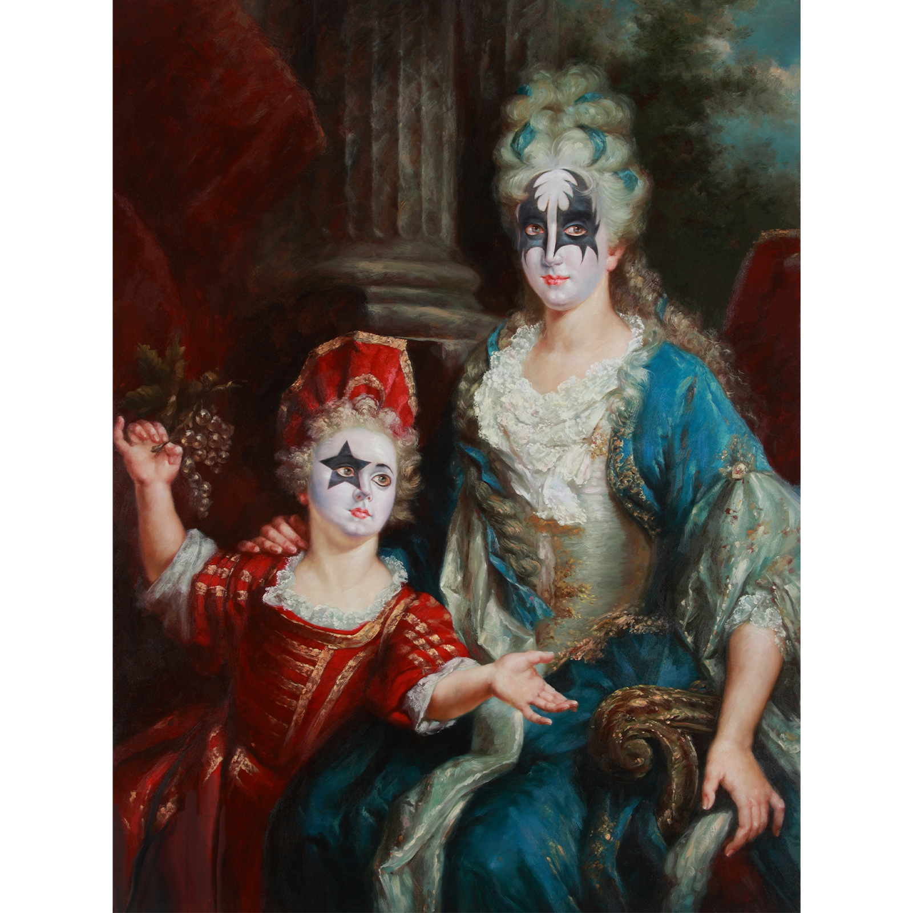
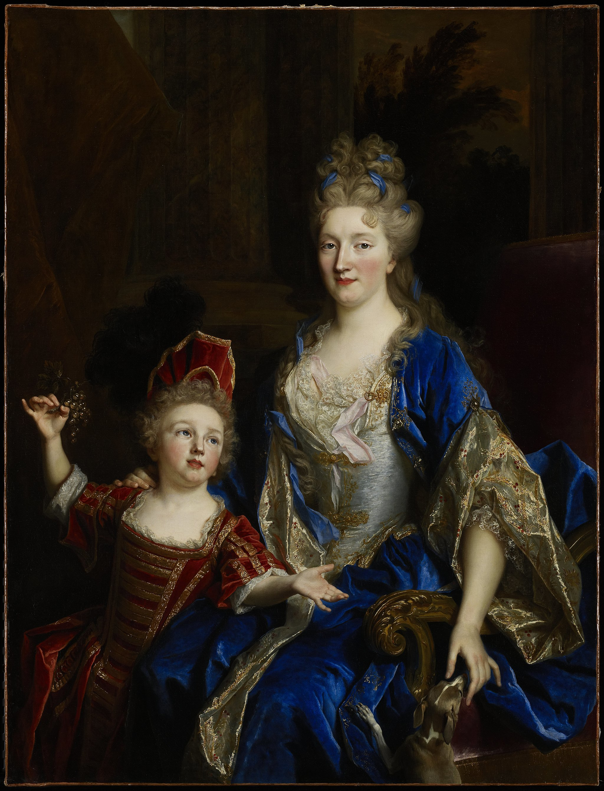
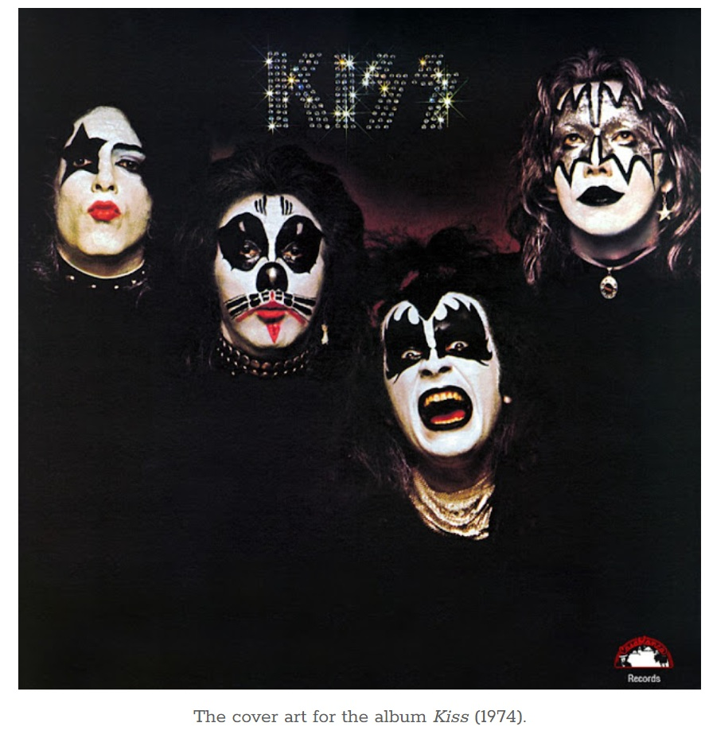
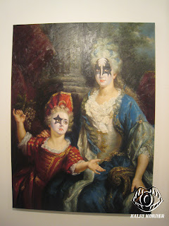
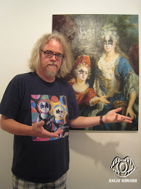

Exhibitions
Popaganda in Japan, Public Image. 3D, Tokyo, Japan, July 1–18, 2011.
Literature
Ron English & Morgan Spurlock, Abject Expressionism: The Art of Ron English (San Francisco: Last Gasp, 2007), p. 183. ISBN 978-0867196894.
Notes
Also known as Rock and Royalty.
In Abject Expressionism, this work was erroneously reported as 48 × 60 inches; this catalogue record retains 40 × 30 inches.
This work references Nicolas de Largillière’s Portrait of Catherine Coustard.
The painting also references members of the band KISS in their signature makeup.
This composition was also reproduced as one of the images included in the Ron English Postcard Set sold by Clutter.
Ancillary Documentation




